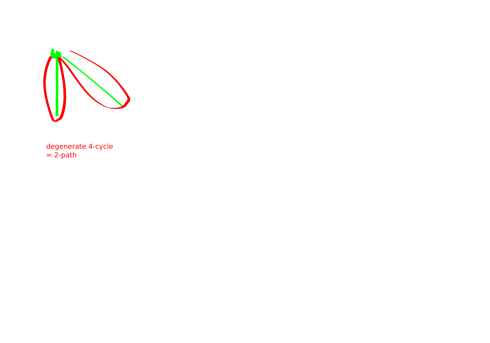

reductions between square or triangle and k-cycle
Henceforth \(C_4\) will be refered to as a “square” sometimes.
Proof from Appendix of Aboud FOCS22. “Hardness of approximation in P via short-cycle removal”
They prove two interesting theorems:Theorem.
- For any \(k\in \mathbb{N}\) there is an \(O(m)\) time algorithm that, on an \(m\)-edge graph \(G\) produces a graph \(G^{\star}\) whose \(4k\)-cycles are in bijection with \(G\)’s \(4\)-cycles.
- For any \(k\ge 3\) not a power of \(2\), there is an \(O(m)\) time algorithm that, on an \(m\)-edge graph \(G\) produces a graph \(G^{\star}\) such that \(G\)’s triangles are in bijection with \(G^{\star}\)’s \(k\)-cycles.
Corollary.
- If \(k\)-cycle can be solved in \(m^{\alpha}\) time for any \(k,\alpha\), then for at least one of \(k_0\in \{3,4\}\) we can solve \(k\)-cycle detection in \(m^{\alpha}\) time.
- If there is an algorithm that with \(O(m^{\alpha})\) preprocessing lists \(k\)-cycles with \(m^{o(1)}\) delay, then there is also such an algorithm for at least one of triangle / square enumeration.
Corollary. The result of Jin Xu STOC23 implies that there is no \(m^{4/3-o(1)}\) preprocessing followed by tiny delays algorithm for \(2k\)-cycle listing. But this is of course kind of weaker than what we believe to be the truth.
ok now lets see some proofs:

“pfs vg!” -Blobby
Lemma. Let \(r\mid k\). \(G \to G'\), such that \(C_r\leftrightarrow C_k\)
Proof. Subdivide the edges. i.e., replace the edges with paths of length \(k/r\).
Lemma. Let \(k\) be odd. There is an \(O(m)\) time algorithm that takes a tripartite graph \(G\) and converts it into \(G^{\star}\) so that triangles in \(G\) are in bijection with \(k\)-cycles in \(G^{\star}\).
Proof. Exchange each \(B\times C\) edge for a path of length \(k-2\), i.e., subdivide those edges.
It is clear that triangles get converted into \(k\)-cycles. To see the other direction it is helpful to partition the vertex set into \(A,B,C, D_1,D_2,\ldots, D_{k-3}\) where \(D_i\) is the vertices which are \(i\) steps along a \(B\to C\) path.
Observe that if we delete any of these parts the graph becomes bipartite, and then we could certainly not find a \(k\)-cycle in it. Hence every \(k\)-cycle must actually use one of the \(B \times C\) path / edge things and thus actually corresponds to a triangle in the original graph.
Remark. These both have the unfortunate property of resuling in graphs with way too many vertices.
square listing
“Listing 4-Cycles” Abboud et al: https://arxiv.org/pdf/2211.10022.pdf
Proposition. You can list squares in \(O(n^{2}+t)\) time, where \(t\) is number of squares.
Proof. Do a 2 step BFS out of every vertex. For each pair \(u,v\) make a list of the paths of length \(2\) between \(u,v\).
Then itterate over \(u,v\) and itterate over pairs of paths of length \(2\) between \(u, v\): each of these is a four-cycle.
Remark. Now we enter sparse land. In sparse land we always assume wlog that \(n\le O(m)\).
Theorem. You can list squares in \(\widetilde{O}(m^{4/3}+t)\) time, where \(t\) is number of squares.
Proof. Let \(L\) be the set of low-degree vertices, i.e., vertices with degree smaller than \(m^{1/3}\). Let \(H\) be the high degree vertices.
We break it into a few cases:
- 2-paths wtih an L at the middle
- 2-paths consisting solely of H vertices
- “LHH” 2-paths. these ones are more tricky. But we only have to list half of them. So they direct the graph in an interesting way.
Lemma. You can list 2-paths with an L in the middle in \(O(m^{4/3})\) time.
Proof. Itterate over edges, if the edge has a low-degree endpoint itterate over that endpoint’s neighbors. Time \(O(m^{4/3})\)
Lemma. You can list 2-paths only involving H vertices in \(O(m^{4/3}+t)\) time.
Proof. At most \(m^{4/3}\) pairs of high deg vertices. Let \(G'\) be the graph where we have removed low degree vertices. This can be computed in time \(O(m)\). Now we do a 2-step BFS out of each vertex in \(G'\). You have to pay for the first 2-path you list between each pair of high degree vertices. After the first one though the rest get charged to \(4\)-cycles.
Theorem. The hard case: LHH.
Lemma. Any graph with \(n\) vertices and average degree \(d\) has \(\Omega(d^{4}-n^{2})\) 4-cycles.
Proof. \(\lambda_1(G) \ge d^{4}\). The number of walks of length 4 is \(tr(A^{4}) \ge \lambda_1(G)\). The number of 4-walks is equal to number of squares plus the number of 2-paths (degenerate C4s): 
The number of \(2\)-paths is simply: \[\sum_{uv} codeg(u,v) \le O(n^{2} + \# C_4).\]
In summary:
\[\# C_4 + \# P_2 \ge d^{4}\] so
\[\# C_4 \ge \Omega(d^{4}-n^{2}).\]
Lemma. Direct the edges from low degree vertex to high degree vertex (breaking ties arbitrarily).
There exists a partition \(H = A\sqcup B\) of high degree vertices so that
- The partition captures most of the \(L\to H\to H\) paths. I.e., the number of \(L\to A\to B\) paths is at least an \(\Omega(1/\log^{2} n)\)-fraction of all of the \(L\to H\to H\) paths.
- The vertices in \(A\) all have about the same number of \(L\) neighbors (up to multiplicative factor of \(2\)) and about the same number of \(B\) neighbors.
- All vertices in \(B\) have an \(A\) dude pointing at them.
Proof.
Start by selecting each high-degree vertex to join \(A\) with probability \(1/2\). This kills \(3/4\) of the \(L\to H\to H\) paths on average. Now bucket the nodes based on \(\left\lfloor \log_2 \cdot \right\rfloor\) in arrows from L and out arrows to B.
Theorem. Let \(P\) be the number of \(L\to H \to H\) paths. If \(P > 100m^{4/3}\log^{2} n\) then there are at least \(P/(100\log^{2 n})\) \(4\)-cycles.
Proof. Combine the lemmas.
Theorem. We can list 4-cycles in \(\widetilde{O}(m^{4/3}+t)\) time.
Proof. Combine the lemmas.
TODO: read “[AYZ95] Noga Alon, Raphael Yuster, and Uri Zwick. Color-coding. J. ACM, 42(4):844–856, 1995.” especially section 4 “perfect hashing”
hexagon listing
“Listing 6-Cycles”: Jin Williams, Zhou which extends this stuff to work for 6-cycles.
High level:
Lemma. We start by color coding with 4 colors. Call the parts \(A,B,C,D\). We only look for 6-cycles with one vertex in A, two vertices in B, two vertices in C, and one vertex in D. We will repeat the construction \(\Theta(\log n)\) times to ensure that we actually hit all the cycles.
- Let \(P_{a,d}\) denote the set of (3-)paths between \(a\in A,d\in D\) such that the first edge in the 3-path is used by multiple \((a,d)\) 3-paths.
- Let \(Q_{a,d}\) be the set of 3-paths between \(a,d\) such that the last edge of the 3-path is used by multiple \((a,d)\) paths.
- Note that \(P_{a,d}\) and \(Q_{a,d}\) are not necessarily disjoint.
- Let \(R_{a,d}\) be the set of \((a,d)\) 3-paths which don’t share an edge with any other \((a,d)\) 3-paths.
- Let \(N_{a,c}\) be the set of \(b\) which are neighbors of both \(a,c\).
- Let \(N_{b,d}\) be the set of \(c\) which are neighbors of both \(b,d.\)
We can compute this stuff in \(O(n^2 + \text{ table size})\).
Proof.
for (b,c) in BxC cap Edges :
for a in N[b] cap A:
insert b into N[a,c]
if |N[a,c]| == 2:
insert c into Q[a,d] for all d in N[c] cap D
for d in N[c] cap D:
insert c into N[b,d]
similar condition to above to add paths to P[a,d]
for (b,c) in BxC cap Edges:
Sa = {a in N[b] cap A : |N[a,c]|==1}
Sd = {d in N[c] cap D : |N[b,d]|==1}
for (a,d) in Sa x Sd:
insert (b,c) into R[a,d]I think there is a simpler way of phrasing this that still works:
List all 2-paths by doing a 2-step BFS out of every vertex.
While listing the 2-paths for each vertex create a list of their "2-step neighbors"
for a in A:
for c in 2-step neighbors of a:
for d in D neighbors of c:
if there are multiple a -> c 2-paths:
mark c as an (a,d) dead-fish
elif there is a unique b for which a->b->c:
mark (b,c) as an (a,d) irreplacable-pathThis should be fine because we have the OP lemma that we can afford to list P2’s.
claim: this code is \(O(n^2 + \text{ table size})\). proof: Basically on most lines of the code we are inserting into the table.
Lemma. Using our table of \(P,Q,R,N\) we can easily list the \(C_6\)’s in \(O(n^{2}+\# C_6)\)
Proof. We do cases on what type of paths the C6 is composed of.
- Case 3: RR
for a in A, d in D:
for (b1,c1) in R[a,d], (b2,c2) in R[a,d]:
if (b1,c1) != (b2,c2):
output C6: a,b1,c1,d,c2,b2- Case 4: P/Q R.
similar to case 3
- Case 1: PQ
for a in A, d in D:
for b1 in P[a,d], c2 in Q[a,d]:
for b2 in N[b1,d], c1 in N[a,c2]:
if b1 != b2 and c1 != c2:
output C6: a b1 b2 d c2 c1The reason this works is because the neighbor sets are size at least \(2\) so when we do “choose 2” it doesn’t become 0. I.e., for \(n\ge 2\) we have \[\binom{n}{2}\ge \frac{n^2}{4}.\] Or at least its this kind of vibe.
- Case 2: similar to case 1
Lemma. Now for the most interesting part: \[\text{table size} \le O(n^{2}+C_6).\]
Proof. First we analyze the PQR stuff.
PQR: Suppose that \(|P_{a,d}|=x\ge 2\). Then you get at least \(\binom{x}{2}\ge x-1\) hexagons. So we get \[\sum_{a,d}|P_{a,d}|\le O(n^{2}+C_6).\]
Remains to show that listing the common neighbors of every pair of vertices is fine. The argument is based on this key fact:
If \(a\in A\) satisfies \(\sum_{c\in C} |N_{a,c}|\ge 100n+k\) then there are at least \(k\) C6’s for which \(a\) is the only \(A\) vertex in the C6.
Let \(G_a\) (basically) be the 2-step BFS tree out of \(a\). We form \(G_a'\) as follows: itteratively delete vertices while there is a vertex of degree at most \(2\). This deletes at most \(2\) edges per vertex, for a total of at most \(2n\) edges. Hence, \(|E(G_a')|\ge 98n+k\). Now we can greedily find a C6.
I was initially a bit confused by this. Because I thought the idea with the color-coding is that we were only going to list the C6’s spanning ABCD. But this isn’t part of the algorithm, this is part of the analysis.
So anyways, this lets us prove:
\[\sum_{c\in C} |N_{a,c}|-100n\] is a lower bound on the number of \(C_6\)’s for which \(a\) is the only \(A\) vertex in the \(C_6\).
Hence, \[C_6 \ge \sum_{a\in A}\sum_{c\in C} (|N_{a,c}|-100n).\] Thus, \[\sum_{a,c} |N_{a,c}| \le O(n^{2}+C_6).\]
lovely!
Remark. They also do something so that if you want to list a certain number of \(C_6\)’s (not all of them) you can do that as well.
Seems like the idea is basically as follows: order the vertices \(v_1,v_2,\ldots,v_n\). Let \(G_i\) be the induced subgraph on \(v_1,\ldots, v_i\).
Binary search over \(i\) until you find one with the right number of \(C_6\)’s, ish.
Anyways, there are some cases and stuff but this is the gist.